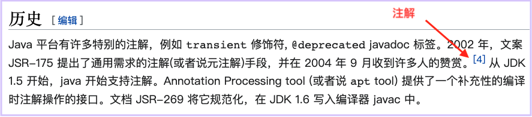
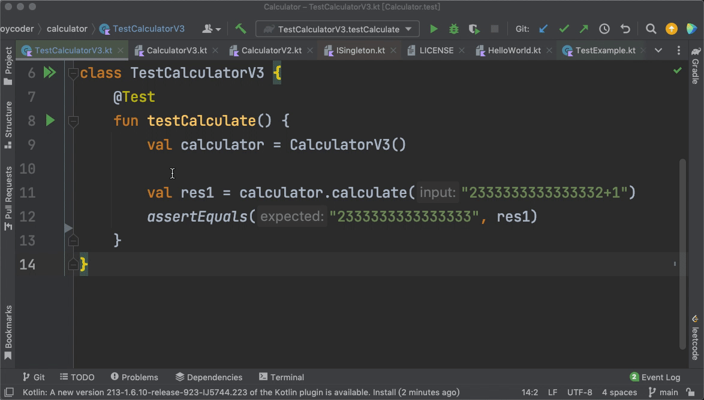
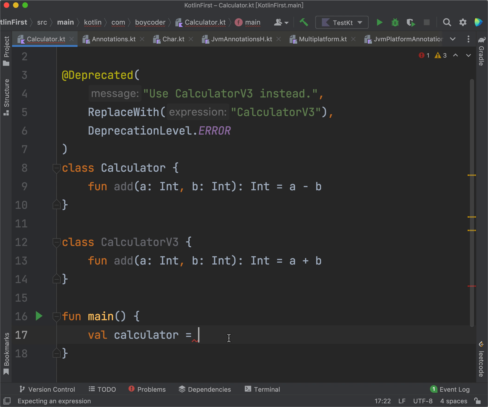

Audio注解与反射：进阶必备技能
你好，我是朱涛。今天这节课，我们来学习一下 Kotlin 的注解（Annotation）和反射（Reflection）。
注解和反射，是 Kotlin 当中比较难理解的内容了。和前面我们学习的泛型一样，注解与反射都是比较抽象的概念。我们现在已经知道，Kotlin 的泛型，就是在代码架构的层面进行的一种抽象，从而达到代码逻辑尽可能复用的目的。那么，注解与反射，它们存在的意义是什么呢？
答案是：提高代码的灵活性。
灵活性，就让注解与反射同样有着举足轻重的地位，借助这两种技术，我们可以做许多有趣的事情。Kotlin 与 Java 领域，有许多著名的开源库，比如大名鼎鼎的Spring Boot、Retrofit、Gson等，都会用到这两种技术。
所以，只有深刻理解了注解和反射，我们才可能理解那些著名开源库的设计思路，也才可能读懂这些世界顶级开发者的代码。
当然，课程进行到这里，学习的难度也越来越高了，不过你也不要因此产生畏难的情绪，只要你能多思考、多练习，把对知识点的理解都落实到代码上，那我相信你对 Kotlin 的掌握情况、代码能力甚至架构能力，都会有一个质的飞跃。并且，在课程中我也会尽量用通俗易懂的语言、例子来给你介绍这些陌生的概念知识，让你在学习的过程中可以轻松一些。
好，下面我们就正式开始吧。
认识注解
注解，可能是我们眼里最熟悉的陌生人。虽然经常见面，但我们并不真的认识它。
实际上，注解几乎无处不在，比如说，我们经常能在 Kotlin 标准库当中看见“@Deprecated”这样的注解，它代表了被标注的代码“已废弃”。如果你有 Java 的编程经验，你一定见过“@Override”这个注解，它代表了重写。
而就算你没有任何编程经验，你也已经在前面的课程中见到过注解了。比如我们在第 4 讲的单元测试代码当中，就用到了 @Test 这个注解；在第 8 讲的性能测试代码中，我们用到了 @Benchmark 这个注解。
其实，要理解 Kotlin 的注解也并不困难，因为在我们的生活当中也有类似的概念，那就是便利贴。
比如在学习的时候，你看到书本里的某个知识点有了新的感悟，就会拿起便利贴，写下来你当时的想法，然后贴到书本当中去。
另一个例子就是，我们经常会在论文或者维基百科当中看到的“注解”。

所以，从这个角度来看，我们很容易就能想清楚注解到底是什么。其实，它就是“对已有数据进行补充的一种数据”。这话读起来有点绕，让我用更通俗的语言来解释一下：
我们学习的时候，写下来的便利贴注解，其实就是对知识点的补充。
维基百科当中的注解，其实就是对它描述内容的一种补充。
因此，Kotlin 当中的注解，其实就是“程序代码的一种补充”。
现在我们就拿第 4 讲中的单元测试代码为例，来看看它的作用。
class TestCalculatorV3 {
// 注解
// ↓
@Test
fun testCalculate() {
val calculator = CalculatorV3()
val res1 = calculator.calculate("2333333333333332+1")
assertEquals("2333333333333333", res1)
}
}上面这段代码中的“@Test”，它的作用是告诉我们的 IDE，testCalculate() 这个方法是一个测试方法。IDE 检测到这个注解以后，就会在旁边的工具栏展示出一个绿色的三角形按钮，方便我们直接运行这个测试方法。
如果我们删掉“@Test”这个注解，这段代码就会变成一段普通的 Kotlin 代码，而旁边工具栏的绿色三角形按钮也会消失。

从这个例子里，我们其实就能体会到注解的灵活性。我们开发者只需要用 Kotlin 的语法写代码即可，至于代码是不是用来做单元测试，我们用一个简单的“@Test”注解就可以搞定。这中间有解耦的思想在里面。
认识到注解是什么以后，我们后面的学习就很简单了。接下来，我们就来看看注解的定义还有使用。
注解的定义
首先，让我们来看看注解是如何定义的。Kotlin 的源代码当中，提供了很多内置的注解，比如 @Deprecated、@JvmStatic、@JvmOverloads 等等。除了 Kotlin 默认就有的注解以外，我们也可以定义自己的注解。
比如说，如果我们想定义一个 @Deprecated 注解，应该怎么做呢？其实非常简单，总体结构和定义一个普通的 Kotlin 类差不多，只是多了一些额外的东西。
@Target(CLASS, FUNCTION, PROPERTY, ANNOTATION_CLASS, CONSTRUCTOR, PROPERTY_SETTER, PROPERTY_GETTER, TYPEALIAS)
@MustBeDocumented
public annotation class Deprecated(
val message: String,
val replaceWith: ReplaceWith = ReplaceWith(""),
val level: DeprecationLevel = DeprecationLevel.WARNING
)从上面的代码里，我们可以看到，@Deprecated 这个注解的定义上面，还有其他的注解 @Target、@MustBeDocumented。这样的注解，我们叫做元注解，即它本身是注解的同时，还可以用来修饰其他注解。
Kotlin 常见的元注解有四个：
@Target，这个注解是指定了被修饰的注解都可以用在什么地方，也就是目标；
@Retention，这个注解是指定了被修饰的注解是不是编译后可见、是不是运行时可见，也就是保留位置；
@Repeatable，这个注解是允许我们在同一个地方，多次使用相同的被修饰的注解，使用场景比较少；
@MustBeDocumented，指定被修饰的注解应该包含在生成的 API 文档中显示，这个注解一般用于 SDK 当中。
这里，你需要注意的是 Target 和 Retention 的取值：
public enum class AnnotationTarget {
// 类、接口、object、注解类
CLASS,
// 注解类
ANNOTATION_CLASS,
// 泛型参数
TYPE_PARAMETER,
// 属性
PROPERTY,
// 字段、幕后字段
FIELD,
// 局部变量
LOCAL_VARIABLE,
// 函数参数
VALUE_PARAMETER,
// 构造器
CONSTRUCTOR,
// 函数
FUNCTION,
// 属性的getter
PROPERTY_GETTER,
// 属性的setter
PROPERTY_SETTER,
// 类型
TYPE,
// 表达式
EXPRESSION,
// 文件
FILE,
// 类型别名
TYPEALIAS
}
public enum class AnnotationRetention {
// 注解只存在于源代码，编译后不可见
SOURCE,
// 注解编译后可见，运行时不可见
BINARY,
// 编译后可见，运行时可见
RUNTIME
}在这段代码的注释当中，我详细解释了 Target 和 Retention 的取值，以及它们各自代表的意义。现在我们就可以回过头，来看看我们定义的“@Deprecated”到底是什么含义。
通过 @Target 的取值，我们可以看到，@Deprecated 只能作用于这些地方：类、 函数、 属性、注解类、构造器、属性 getter、属性 setter、类型别名。此外，@Deprecated 这个类当中还包含了几个成员：message 代表了废弃的提示信息；replaceWith 代表了应该用什么来替代废弃的部分；level 代表警告的程度，分别是 WARNING、ERROR、HIDDEN。
OK，现在我们已经知道如何定义注解了，接下来看看如何用它。我们仍然以 @Deprecated 注解为例。
注解的使用
假设现在我们要开发一个计算器，第一个版本的 Calculator 代码出现了问题，然后这个问题在 CalculatorV3 当中修复了。这时候，我们希望所有的调用方都将 Calculator 改为 CalculatorV3。这种情况，@Deprecated 这个注解就恰好符合我们的需求。
@Deprecated(
message = "Use CalculatorV3 instead.",
replaceWith = ReplaceWith("CalculatorV3"),
level = DeprecationLevel.ERROR
)
class Calculator {
// 错误逻辑
fun add(a: Int, b: Int): Int = a - b
}
class CalculatorV3 {
// 正确逻辑
fun add(a: Int, b: Int): Int = a + b
}在上面的代码中，我们使用 @Deprecated 修饰了 Calculator 这个类。message 代表了报错的提示信息；replaceWith 代表了正确的解决方案；DeprecationLevel.ERROR 则代表了 IDE 会把这个问题当作是错误的来看待。
现在，我们再来看看 @Deprecated 的实际效果：

可以看到，当我们在代码当中使用了 Calculator 的时候，IDE 会报错，鼠标挪到报错处后，IDE 会显示 message 当中的内容“Use CalculatorV3 instead.”。另外，IDE 还会提供一个快速修复的选项“Replace with CalculatorV3”，只要我们点击那个选项，我们的 Calculator 就会被直接替换成 CalculatorV3，从而达到修复错误的目的。
还有，由于我们使用的 level 是 DeprecationLevel.ERROR，所以 IDE 会直接报错。而如果我们使用的是 DeprecationLevel.WARNING，IDE 就只会提示一个警告，而不是错误了。
好了，到这里，我们就了解了注解要如何定义和使用。其实啊，只要我们真正理解了 Kotlin 的注解到底是什么东西，前面的这些注解的语法是很容易就能记住的。不过，Kotlin 注解在使用的时候，还有一个细节需要注意，那就是注解的精确使用目标。
object Singleton {
// ①
// ↓
@set:Inject
lateinit var person: Person
// ↑
// ②
}这段代码，是一个简单的 Dagger 使用场景。如果你不熟悉 Dagger，那也没关系，你只需要关注一下上面的两个注释。
注释①：如果去掉 set 这个标记，直接使用 @Inject 这个注解，我们的程序将无法正常工作。这是因为 Kotlin 当中的一个 var 修饰的属性，它会有多种含义：这个属性背后的字段（field）、这个属性对应的 setter、还有这个属性对应的 getter，在没有明确标注出来要用哪个的时候，@Inject 根本不知道该如何决定。因此，这里的“@set:Inject”的作用，就是明确标记出注解的精确使用目标（Use-site targets）。
注释②：如果没有 lateinit 这个关键字，person 这个属性是必须要有初始值的，要么直接赋值，要么在构造函数当中被赋值。因为如果它不被初始化，person 这个属性将为空，而这个就和它的类型“不可为空的 Person 类型”冲突了。而加上 lateinit 修饰的属性，即使它是不可为空的，编译器也会允许它无初始值。但当我们需要依赖注入的时候，常常需要与 lateinit 结合使用。
实际上，注解的精确使用目标，一般是和注解一起使用的，在上面的例子当中，set 就是和 @Inject 一起使用的。而除了 set 以外，Kotlin 当中还有其他的使用目标：
file，作用于文件；
property，作用于属性；
field，作用于字段；
get，作用于属性 getter；
set，作用于属性 setter；
receiver，作用于扩展的接受者参数；
param，作用于构造函数参数；
setparam，作用于函数参数；
delegate，作用于委托字段。
好，理解了注解这个特性之后，我们再来看看 Kotlin 的反射。
认识反射
反射，是 Kotlin 当中另一个比较抽象的概念。如果说注解是最熟悉的陌生人，那反射就单纯只是个陌生人了。因为，我们很少会在平时的业务开发当中直接用到反射。但是，在架构设计的时候，反射却可以极大地提升架构的灵活性。很多热门的开源库，也都喜欢用反射来做一些不同寻常的事情。因此，反射也是极其重要的一个语法特性。
所有的计算机程序其实都是服务于真实世界，用来解决实际问题的。所以，其实我们也通过一些真实世界的例子来理解反射的本质。
古人云：吾日三省吾身，指的是人的自我反省能力。反射，则是程序自我反省的能力。人的自我反省的能力，跟程序的反射，它们之间有许多相似之处。
人类可以反省自己当前的状态，比如说，我们随时可以知道自己是不是困了。而在 Kotlin 当中，程序可以通过反射来检查代码自身的状态，比如说，判断某个变量，它是不是可变的。
另外，人类反省自己的状态以后，还可以主动改变自己的状态。比如说，困了就休息一会儿、饿了就吃饭、渴了就喝点水。而在 Kotlin 当中，我们可以在运行时，用反射来查看变量的值是否符合预期，如果不符合预期，我们就可以动态修改这个变量的值，即使这个变量是 private 的甚至是 final 的。
还有，人类可以根据状态作出不同的决策。比如说，上班的路上，如果快迟到了，我们就会走快点，如果时间很充足，就可以走慢一点。而在程序世界里，JSON 解析经常会用到 @SerializedName 这个注解，如果属性有 @SerializedName 修饰的话，它就以指定的名称为准，如果没有，那就直接使用属性的名称来解析。
所以，总的来看，Kotlin 反射具备这三个特质：
感知程序的状态，包含程序的运行状态，还有源代码结构；
修改程序的状态；
根据程序的状态，调整自身的决策行为。
反射的应用
在 Kotlin 当中，反射库并没有直接集成到标准库当中。这是为了方便一些对程序安装包敏感的应用，可以根据实际需求来选择是否要用 Kotlin 反射。比如，在 Android 开发当中，我们对安装包体积就十分敏感，如果没有反射的需求，就完全不需要多引入这个依赖。
而对应的，如果我们需要用到反射，就必须要引入这个依赖：
implementation "org.jetbrains.kotlin:kotlin-reflect"前面我们刚了解过 Kotlin 反射的三个特质，那么在这里，我们就用代码来探索下这三种特质。
在正常情况下，我们写出来的程序，其实也可以感知自身部分的状态。比如，我们前面课程中写的计算器程序，还有词频统计程序，本质上都是对输入数据状态的感知。不过，它们感知的状态十分有限。
假设，现在有一个待实现的函数 readMembers。这个函数的参数 obj 可能是任何的类型，我们需要读取 obj 当中所有的成员属性的名称和值，那么具体该怎么做呢？
fun main() {
val student = Student("Tom", 99.5, 170)
val school = School("PKU", "Beijing...")
readMembers(student)
readMembers(school)
}
fun readMembers(obj: Any) {
// 读取obj的所有成员属性的名称和值
}
data class Student(
val name: String,
val score: Double,
val height: Int
)
data class School(
val name: String,
var address: String
)
// 要求readMembers函数能够输出以下内容：
Student.height=170
Student.name=Tom
Student.score=99.5
School.address=Beijing...
School.name=PKU从上面的代码，我们可以看到，readMembers() 这个函数无法提前知道参数是什么类型，但是，在这个函数当中，我们还是要能够准确找到 obj 的所有成员属性，然后输出它们的名称和值。
对于这样的问题，也许你会第一时间想到用 when 表达式，写出类似这样的代码：
fun readMembers(obj: Any) {
when(obj) {
is Student -> { /*...*/ }
is School -> { /*...*/}
else -> { /*...*/}
}
}但是，在这个例子里，我们是只有 Student、School 这两种情况，而在实际情况下，obj 可能的类型是成千上万的，我们根本无法用 when 的方式提前硬编码进行预测。比如你可以再看看下面这段示例：
fun readMembers(obj: Any) {
when(obj) {
is Student -> { /*...*/ }
is School -> { /*...*/}
// 硬编码的话，这里要写成千上万个逻辑分支，根本不可能做到
else -> { /*...*/}
}
}可见，即使我们有心想要写上万个逻辑分支，那当中的代码量也是不可想象的。因此，对于类似这样的问题，我们就可以考虑使用反射了。
fun readMembers(obj: Any) {
obj::class.memberProperties.forEach {
println("${obj::class.simpleName}.${it.name}=${it.getter.call(obj)}")
}
}看，通过反射，简单的几行代码就搞定了这个需求。如果你是第一次接触反射，可能会觉得上面的代码有点难懂，我来带你分析一下。
首先，是 obj::class，这是 Kotlin 反射的语法，我们叫做类引用，通过这样的语法，我们就可以读取一个变量的“类型信息”，并且就能拿到这个变量的类型，它的类型是 KClass。
public actual interface KClass<T : Any> : KDeclarationContainer, KAnnotatedElement, KClassifier {
public actual val simpleName: String?
public actual val qualifiedName: String?
override val members: Collection<KCallable<*>>
// 省略部分代码
}这个 KClass 其实就代表了一个 Kotlin 类，通过 obj::class，我们就可以拿到这个类型的所有信息，比如说，类的名称“obj::class.simpleName”。而如果要获取类的所有成员属性，我们访问它的扩展属性 memberProperties 就可以了。
val <T : Any> KClass<T>.memberProperties: Collection<KProperty1<T, *>>
get() = (this as KClassImpl<T>).data().allNonStaticMembers.filter { it.isNotExtension && it is KProperty1<*, *> } as Collection<KProperty1<T, *>>在拿到所有的成员属性以后，我们可以通过 forEach 遍历所有的属性，它的类型是 KProperty1，同时也是 KCallable 的子类，我们通过调用属性的 getter.call()，就可以拿到 obj 属性的值了。
这样，到目前为止，我们的程序就已经可以感知到自身的状态了，接下来我们来尝试修改自身的状态，这是反射的第二个特质。
具体需求是这样的：如果传入的参数当中，存在 String 类型的 address 变量，我们就将其改为 China。
fun main() {
val student = Student("Tom", 99.5, 170)
val school = School("PKU", "Beijing...")
readMembers(student)
readMembers(school)
// 修改其中的address属性
modifyAddressMember(school)
readMembers(school)
readMembers(student)
}
fun modifyAddressMember(obj: Any) {
obj::class.memberProperties.forEach {
if (it.name == "address" && // ①
it is KMutableProperty1 && // ②
it.setter.parameters.size == 2 && // ③
it.getter.returnType.classifier == String::class // ④
) {
// ⑤
it.setter.call(obj, "China")
println("====Address changed.====")
}
}
}
// 运行结果：
Student.height=170
Student.name=Tom
Student.score=99.5
// 注意这里
School.address=Beijing...
School.name=PKU
====Address changed.====
// 注意这里
School.address=China
School.name=PKU
Student.height=170
Student.name=Tom
Student.score=99.5从上面的代码中，我们可以看到，当我们运行了 modifyAddressMember(school) 这行代码以后，反射代码就会检查传入的变量当中，是否存在 String 类型的 address，如果存在，就会将它的值修改为“China”。
这里你可以关注下我在其中标出来的四个注释，它们就代表了关键的逻辑：
注释①，判断属性的名称是否为 address，如果不是，则跳过；
注释②，判断属性是否可变，在我们的例子当中 address 是用 var 修饰的，因此它的类型是 KMutableProperty1；
注释③，我们在后面要调用属性的 setter，所以我们要先判断 setter 的参数是否符合预期，这里 setter 的参数个数应该是 2，第一个参数是 obj 自身，第二个是实际的值；
注释④，根据属性的 setter 的返回值类型 returnType，来判断属性的类型是不是 String 类型；
注释⑤，调用属性的 setter 方法，传入 obj，还有“China”，来完成属性的赋值。
好，到这里，我们就已经了解了反射的两种特质，分别是感知程序的状态和修改程序的状态。现在只剩下第三种，根据程序状态作出不同决策。这个其实非常容易做到。
假如在前面的例子的基础上，我们想要增加一个功能：如果传入的参数没有符合需求的 address 属性，我们就输出一行错误日志。这其实也就代表了根据程序的状态，作出不同的行为。比如，我们可以看看下面这段示例，其中的 else 分支就是我们的决策行为“输出错误日志”：
fun modifyAddressMember(obj: Any) {
obj::class.memberProperties.forEach {
if (it.name == "address" &&
it is KMutableProperty1 &&
it.getter.returnType.classifier == String::class
) {
it.setter.call(obj, "China")
println("====Address changed.====")
} else {
// 差别在这里
println("====Wrong type.====")
}
}
}
// 输出结果：
Student.height=170
Student.name=Tom
Student.score=99.5
School.address=Beijing...
School.name=PKU
====Address changed.====
====Wrong type.==== // 差别在这里
School.address=China
School.name=PKU
Student.height=170
Student.name=Tom
Student.score=99.5在前面的几个案例当中，我们用到了 Kotlin 反射的几个关键的反射 Api 和类：KClass、KCallable、KParameter、KType。现在，我们来进一步看看它们的关键成员。
KClass 代表了一个 Kotlin 的类，下面是它的重要成员：
simpleName，类的名称，对于匿名内部类，则为 null；
qualifiedName，完整的类名；
members，所有成员属性和方法，类型是Collection<KCallable<*>>；
constructors，类的所有构造函数，类型是Collection<KFunction<T>>>；
nestedClasses，类的所有嵌套类，类型是Collection<KClass<*>>；
visibility，类的可见性，类型是KVisibility?，分别是这几种情况，PUBLIC、PROTECTED、INTERNAL、PRIVATE；
isFinal，是不是 final；
isOpen，是不是 open；
isAbstract，是不是抽象的；
isSealed，是不是密封的；
isData，是不是数据类；
isInner，是不是内部类；
isCompanion，是不是伴生对象；
isFun，是不是函数式接口；
isValue，是不是 Value Class。
KCallable 代表了 Kotlin 当中的所有可调用的元素，比如函数、属性、甚至是构造函数。下面是 KCallable 的重要成员：
name，名称，这个很好理解，属性和函数都有名称；
parameters，所有的参数，类型是List<KParameter>，指的是调用这个元素所需的所有参数；
returnType，返回值类型，类型是 KType；
typeParameters，所有的类型参数 (比如泛型)，类型是List<KTypeParameter>；
call()，KCallable 对应的调用方法，在前面的例子中，我们就调用过 setter、getter 的 call() 方法。
visibility，可见性；
isSuspend，是不是挂起函数。
KParameter，代表了KCallable当中的参数，它的重要成员如下：
index，参数的位置，下标从 0 开始；
name，参数的名称，源码当中参数的名称；
type，参数的类型，类型是 KType；
kind，参数的种类，对应三种情况：INSTANCE 是对象实例、EXTENSION_RECEIVER 是扩展接受者、VALUE 是实际的参数值。
KType，代表了 Kotlin 当中的类型，它重要的成员如下：
classifier，类型对应的 Kotlin 类，即 KClass，我们前面的例子中，就是用的 classifier == String::class 来判断它是不是 String 类型的；
arguments，类型的类型参数，看起来好像有点绕，其实它就是这个类型的泛型参数；
isMarkedNullable，是否在源代码中标记为可空类型，即这个类型的后面有没有“?”修饰。
所以，归根结底，反射，其实就是 Kotlin 为我们开发者提供的一个工具，通过这个工具，我们可以让程序在运行的时候“自我反省”。这里的“自我反省”一共有三种情况，其实跟我们的现实生活类似。
第一种情况，程序在运行的时候，可以通过反射来查看自身的状态。
第二种情况，程序在运行的时候，可以修改自身的状态。
第三种情况，程序在运行的时候，可以根据自身的状态调整自身的行为。
小结
好了，让我们来做个简单的总结吧。
注解和反射，是 Kotlin 当中十分重要的特性，它们可以极大地提升程序的灵活性。那么，在使用注解和反射的时候，你要知道，注解，其实就是“程序代码的一种补充”，而反射，其实就是“程序代码自我反省的一种方式”。
在这节课当中，我们已经分别见识了注解与反射的威力。那么，如果我们将它们两者结合起来使用会产生什么样的反应呢？我们将在下节课当中揭晓！
思考题
这节课，我们学习了 Kotlin 的注解、反射，其实 Java 当中也是有注解与反射的。那么你知道 Kotlin 和 Java 之间有哪些异同点吗？欢迎给我留言，我们一起交流探讨。
好了，我们下节课再见吧！
COMMUNITY NOTES
读者评论
这篇文章暂时没有读者留言。